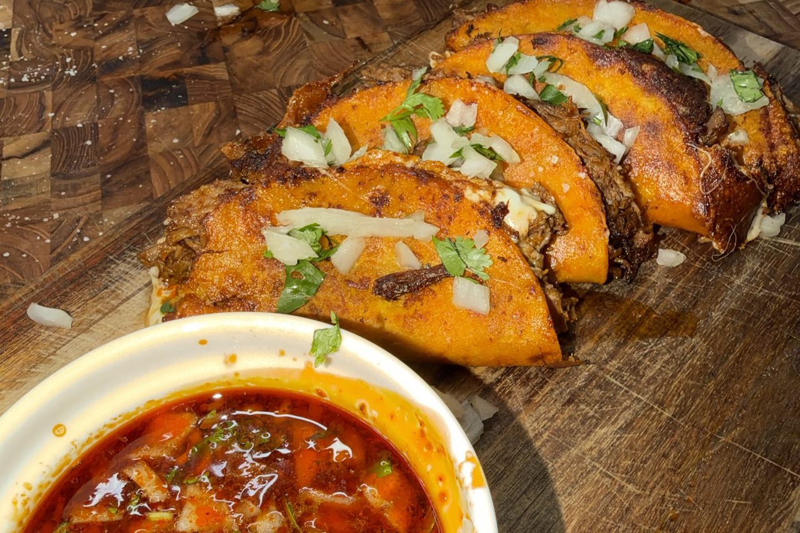

Quesabirria Tacos with Consommé
Six pounds of chuck seared hard, braised low in the oven for about 2.5 hours with birria seasoning, then shredded. The meat goes into fat-dipped, pan-crisped corn tortillas with Oaxaca cheese, and the braising liquid becomes the consommé for dunking.
Mexican · Beef · High Protein · Dinner · Meal Prep · Comfort Food

842kcal
59gprotein
Makes 12 servings. Whole batch: 10100 kcal, 710g protein.
Ingredients
Steps
- Pat the chuck dry and season with salt. Sear the cubes in batches in a Dutch oven until well browned on a couple of sides. Don't crowd the pot; you want color on the meat and fond on the bottom.
- Pull the meat. Pour in 2 cups of bone broth and scrape up all the fond.
- Add the onion, garlic, birria seasoning bombs and bay leaves, then return the meat. Add the other 2 cups of broth and 4 cups of water.
- Bring to a simmer on the stove for a few minutes, cover, and move to a 325°F oven for about 2.5 hours, until the beef falls apart.
- Lift the meat into a bowl and shred it with two forks. Fish out the bay leaves. The liquid left in the pot is the consommé; taste and salt it.
- For each taco: dip a corn tortilla in the red fat floating on top of the consommé and lay it in a hot nonstick pan. Add Oaxaca cheese and a layer of meat, fold, and crisp both sides until the shell is deep orange and the cheese melts.
- Top with onion and cilantro, squeeze lime over, and serve with a cup of consommé for dipping.
Chill the leftover consommé and the fat sets on top. Skim it into its own container and use a spoonful to fry tortillas or naan later (see the naan wrap). Six pounds of chuck makes far more meat than one person eats in a week; it freezes well in deli containers. Macros are per serving of 4 tacos (~5 oz shredded beef, ~2 oz Oaxaca, a cup of consommé) and are estimates: cooked chuck yields roughly 65% of raw weight, and fat skimmed off the consommé isn't counted. Batch makes about 12 servings. Salt: the Birria Queen bombs have little to no salt, so treat them as the spice blend only and salt the liquid early; it took about 4 tsp for 8 cups of liquid. Salting late left the meat a little underseasoned next to the consommé. Next time: half chuck, half beef shank, and toast and blend dried guajillo, ancho and arbol instead of relying on the bombs alone.